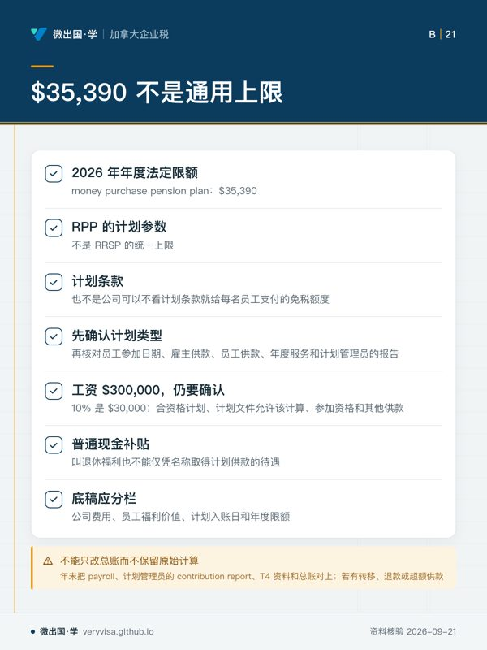
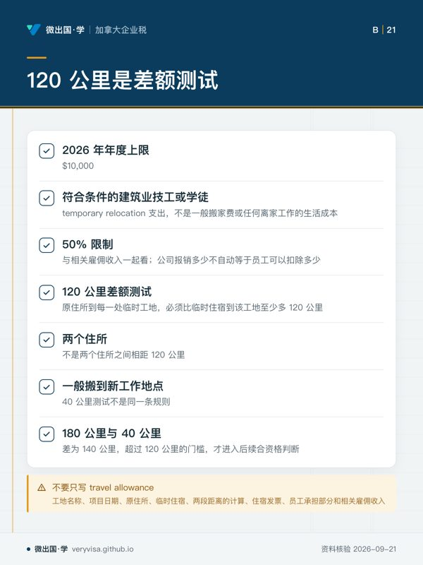
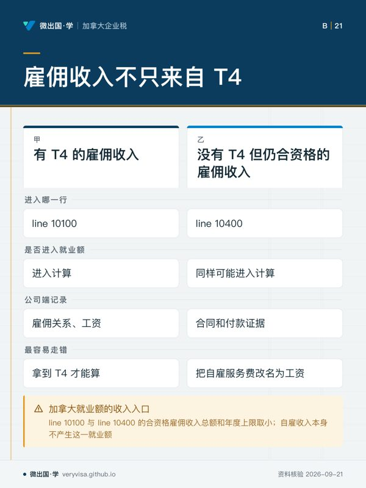
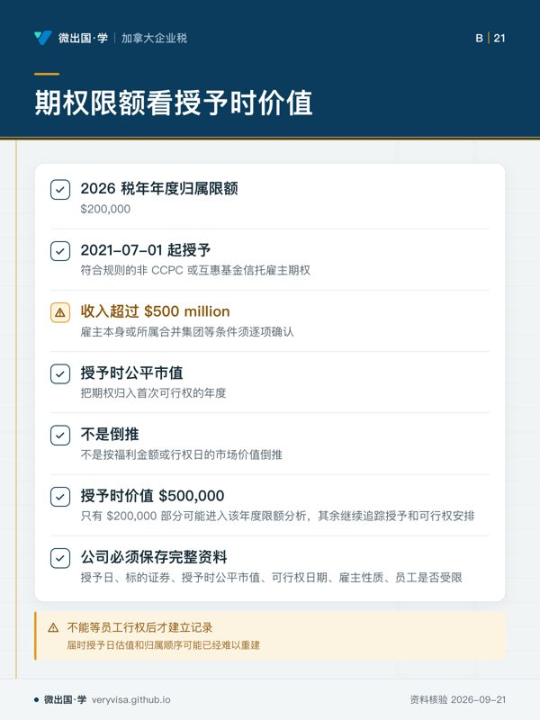

核实日期：2026-09-10｜本页口径：2026 税年公司薪酬、退休计划、技工流动与证券期权。下一次复核：2027-01-31。公司政策要把雇主成本、员工收入、扣除条件和信息申报分开，不能把“福利”当成一个统一税务类别。
公司设计薪酬方案时，最容易把四件事混在一起：公司为员工承担的成本、员工可以扣除的金额、员工取得的应税收入，以及股权奖励何时进入工资资料。退休计划、临时工地住宿、雇员收入抵免和证券期权分别有不同的触发点。一个待遇在会计上叫“福利”，不代表它在所得税、T4、CPP/EI 和员工个人申报上都走同一条路线。
一、先把薪酬政策拆成四个问题
第一，公司到底支付了什么：现金工资、退休计划供款、搬迁或临时住宿费用，还是股份或期权。第二，谁取得经济利益：员工本人、公司计划、关联股东还是承包商。第三，何时取得：付款日、可供款日、入住日、期权归属日和行权日可能不同。第四，凭什么证明：合同、董事会或薪酬委员会决议、里程和住宿记录、计划文件、券商报表以及 T4 代码。
这套拆分能防止公司用一张“员工福利”总表代替事实。福利政策应当列明适用对象、上限、批准人、凭证、员工是否偿还以及年度复核日期。尤其是小公司里股东、董事和员工经常是同一个人，若不把身份和决议写清楚，工资、股息、贷款和福利很容易在账上互相改名。
二、退休计划的 $35,390 不是所有退休供款的通用上限
2026 年 money purchase pension plan 的年度法定限额为 $35,390。这是 RPP money purchase plan 的计划参数，不是 RRSP 的统一上限，也不是公司可以不看计划条款就给每名员工支付的免税额度。公司先要确认计划类型，再核对员工参加日期、雇主供款、员工供款、年度服务和计划管理员的报告。
例如，公司承诺“每年为员工退休储蓄支付工资的 10%”。若员工工资为 $300,000，表面上的 10% 是 $30,000，仍要确认这笔款项确实进入合资格计划、计划文件允许该计算、员工是否有足够的参加资格，以及公司是否还支付其他供款。反过来，若公司把普通现金补贴叫“退休福利”，也不能仅凭名称取得计划供款的待遇。
底稿应将公司费用、员工福利价值、计划入账日和年度限额分栏。年末把 payroll、计划管理员的 contribution report、T4 资料和总账对上；若计划发生转移、退款或超额供款，不能只改总账而不保留原始计算。
三、技工劳动力流动扣除是有条件的专项规则
2026 年技工劳动力流动扣除的年度上限为 $10,000。它服务的是符合条件的建筑业技工或学徒 temporary relocation 支出，并非一般搬家费或任何离家工作的生活成本。合格支出的上限还要与相关雇佣收入的 50% 限制一起看，因此公司报销了多少，并不自动等于员工可以扣除多少。
距离测试也不能凭“搬得很远”判断。2026 年及以后，员工原住所到每一处临时工地的距离，必须比临时住宿地点到该工地的距离至少多 120 公里。这是“原住所到工地”与“临时住宿到工地”的差额测试，不是两个住所之间相距 120 公里。它和一般搬到新工作地点的 40 公里测试不是同一条规则。
公司若向技工支付住宿、交通或搬迁补助，应保存工地名称、项目日期、原住所、临时住宿、两段距离的计算、住宿发票、员工承担部分和相关雇佣收入。不要在工资系统里只写“travel allowance”。若一笔费用属于员工个人扣除，另一笔又由公司全额报销，必须明确是否存在重复受益以及报销是否应计入员工收入。
案例：员工从家到临时工地 180 公里，临时住宿到工地 40 公里。距离差为 140 公里，超过 120 公里的门槛，才进入后续合资格判断；仍需检查技工身份、临时住宿、日期、实际支出和 50% 收入限制。若公司只保留酒店发票而没有路线和工作记录，不能仅凭金额宣称满足专项规则。
四、雇佣收入不只来自 T4
加拿大就业额的收入入口以 line 10100 与 line 10400 的合资格雇佣收入总额和年度上限取小。它不是“拿到 T4 才能算”的抵免；没有 T4 的合资格 line 10400 雇佣收入也可能进入计算。但自雇收入本身不产生这一就业额。
对公司而言，这意味着 T4 不是所有事实的替代品。公司要准确记录雇佣关系、工资、佣金或其他属于 line 10400 的收入，并为没有标准 T4 的特殊情形保留合同和付款证据。不能为了让员工获得抵免，把自雇服务费改名为工资；也不能因为员工最终需要在 T1 上处理某项收入，就认为公司端无需保存付款性质。
五、证券期权：看授予时价值与首次可行权年度
2026 税年适用的证券期权年度归属限额为 $200,000。该限制适用于 2021-07-01 起授予、符合规则的非 CCPC 或互惠基金信托雇主期权；雇主本身或所属合并集团的收入超过 $500 million 等条件须逐项确认。规则以授予时标的证券的公平市值，把期权归入首次可行权的年度，而不是按福利金额或行权日的市场价值倒推。公司必须保存授予日、标的证券、授予时公平市值、可行权日期、雇主性质以及员工是否受限的完整资料。✅源：CRA 证券期权归属限额（CRA）
“员工今年行权多少”不是决定年度限额的唯一事实。若期权在授予时价值 $500,000，其中只有依法归入首次可行权年度的 $200,000 部分可能进入该年度限额分析；其余部分要按授予和可行权安排继续追踪。公司不能等员工行权后才第一次建立记录，因为届时授予日估值和归属顺序可能已经难以重建。
非 CCPC 与 CCPC 的处理不要混写。公司的法人分类、股份条件、雇员与公司关系、期权协议和收购日期都可能改变结果。股东兼雇员还要额外检查是否存在关联人或非公平交易安排；“这是给员工的股票”不足以完成资格判断。
六、把三个团队的资料接起来
人事团队保存合同和政策，财务团队保存付款和总账，税务团队保存限额、资格和申报判断。三方应共享一张 compensation register，至少包含：待遇类型、取得人、适用税年、发生日期、金额、是否计入 payroll、是否有员工偿还、依据文件、T4 或其他信息表、下一次复核日期。退休计划和证券期权还要加计划/协议版本与估值来源。
最常见的三个错误是：把 $35,390 当作所有退休福利的通用免税额；把 120 公里距离理解成两个住所之间的距离；把 $200,000 期权限额按行权日福利额计算。正确路线是先判定待遇类型和身份，再判定时间点与资格，最后套年度参数。所有数字标注“2026 税年、2026-09-10 核实、2027-01-31 复核”，计划条款、CRA 指引或立法状态变化时提前复查。
七、一个完整的审批例子
假设公司为一名需要长期赴外地项目的技工支付临时住宿，并同时提供退休计划和期权。审批表应先把三项待遇分开：住宿是否属于技工专项规则，退休款是否真正进入合资格 money purchase plan，期权应归入哪一个首次可行权年度。人事不能用同一张“福利免税”勾选表替代三份判断；财务也不能因为三项都由公司银行账户支付，就把它们合并成一笔员工成本。
项目结束后，公司应把实际住宿日期、工地路线、计划供款报告和期权协议版本一并归档。若员工中途改变工作地点、离职或行权，事件日期要回写到登记表。这样下一年度复核时，复核人能分辨哪些是 2026 年发生的金额，哪些只是 2026 年收到的更正或延迟报告。
本页知识卡
不看正文也能拿到这一节的核心内容：先看导读，再看图。点图放大，左右翻页。
- 先看先看第三格，再回到前两格检查对象、利益和时点有没有混在一起。
- 易漏小公司里三种身份常落在同一人身上；若文件不清，工资、股息、贷款和福利容易在账上互相改名。
- 下一步去练习，用同一笔付款跑完四问；身份交叉时带给持牌专业人士。

- 先看先看计划参数那格，再读确认顺序；重点是先分清是哪一类安排。
- 易漏最容易读错的是把法定参数当成员工人人可用的额度；实际还要回到具体计划。
- 下一步去练习，把一笔退休支付按计划类型、入账和凭证逐项核对。

- 先看先看差额测试，再用案例确认自己比较的是两段到工地的路线。
- 易漏一笔费用若个人扣除、另一笔又由公司全额报销，要明确是否重复受益、报销是否应计入员工收入。
- 下一步去练习，按案例自己重做一遍判断；疑难报销交持牌专业人士。

- 先看先横看前两行，先判断收入性质，再看申报入口和公司留存。
- 易漏员工最终要在 T1 上处理某项收入，不等于公司端无需保存付款性质。
- 下一步去练习，拿一笔没有标准凭证的付款判断它应归哪类收入。

- 先看先看归入年度的计算依据，别先从行权时点倒推。
- 易漏非 CCPC 与 CCPC 的处理不要混写；股份条件、雇员与公司关系、期权协议和收购日期都可能改变结果。
- 下一步去练习，用一份期权协议标出授予、可行权和收购日期。